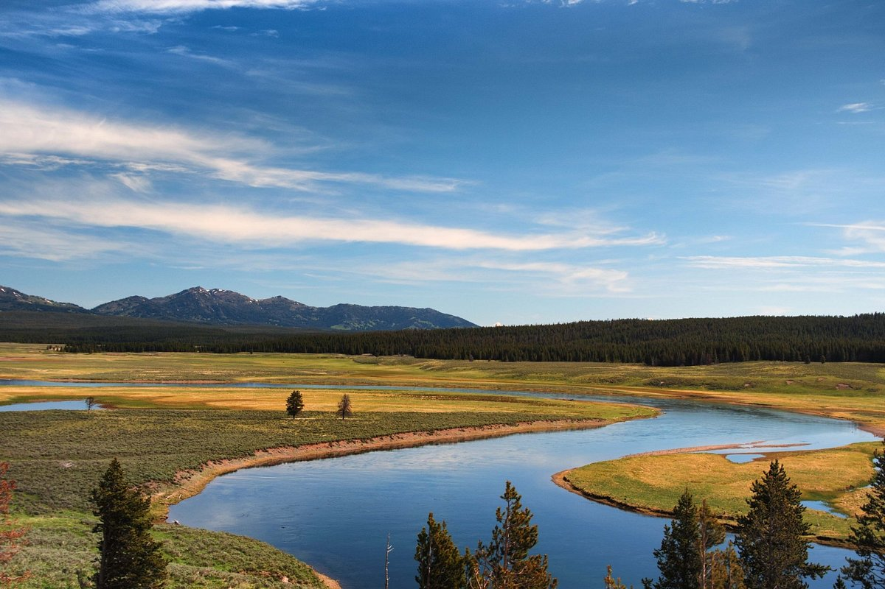
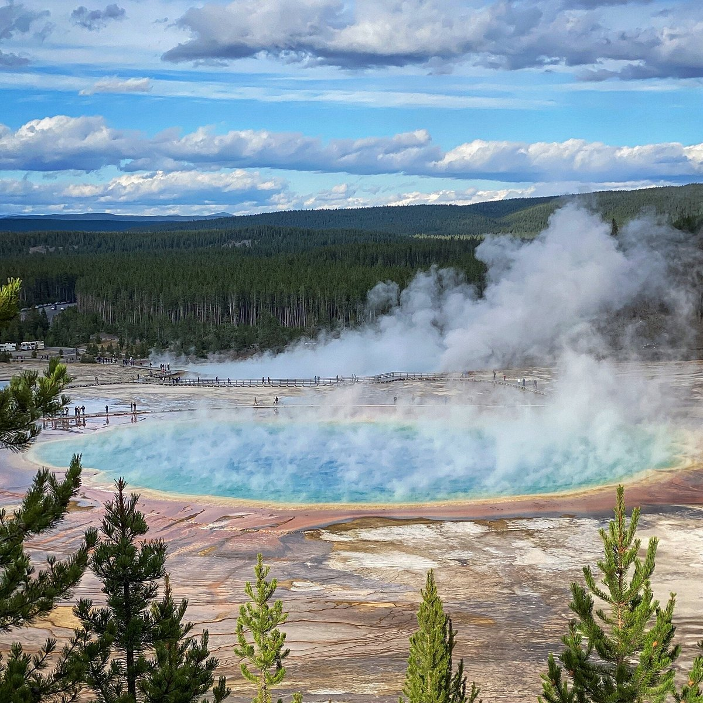
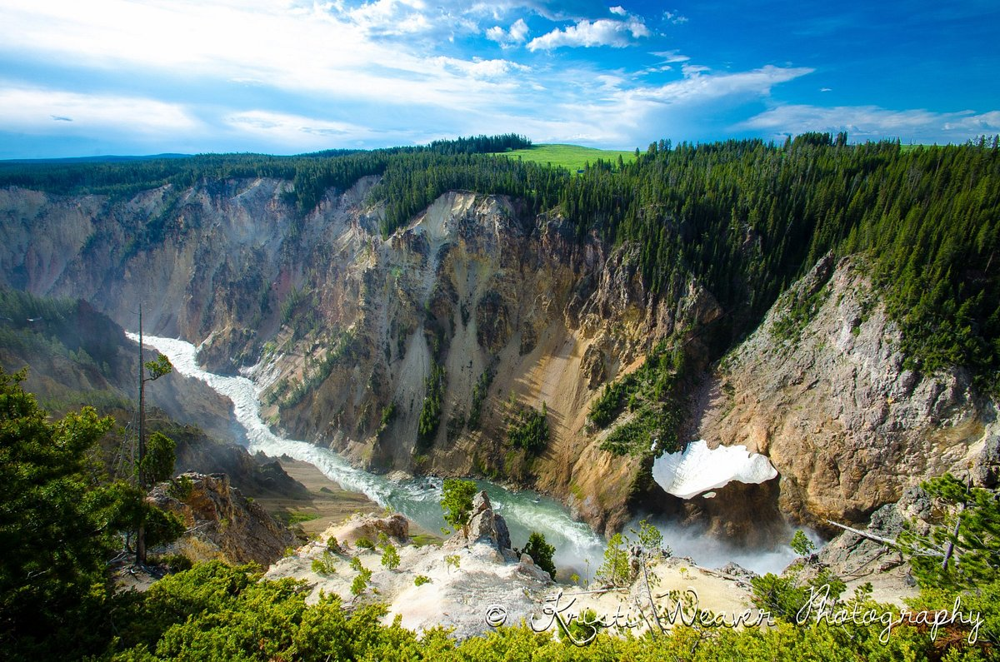
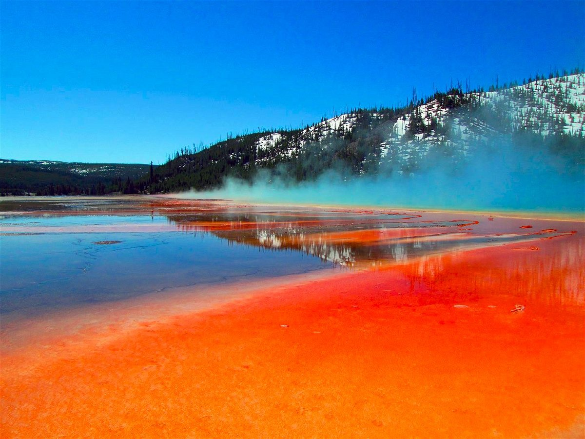
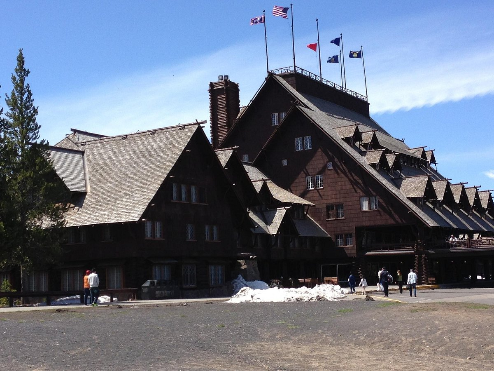
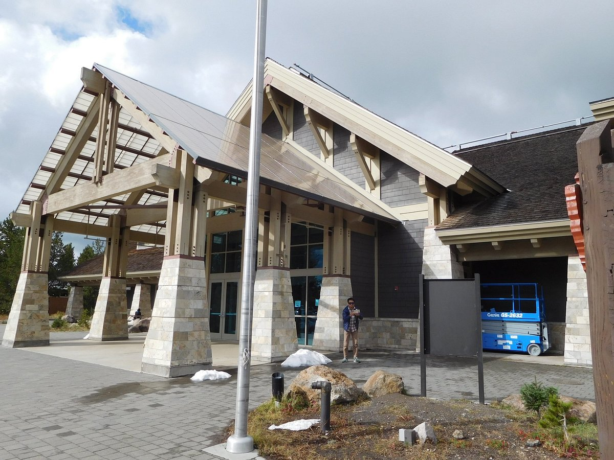
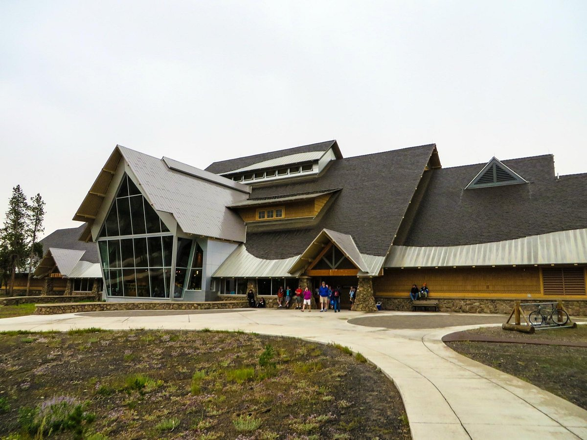

QUÉ HACER

Sunny Days
A continuacion se listan una serie de lugares a visitar. Esperamos pueda usted disfrutar de la bella naturaleza que nos rodea.






Rainy Days
Aún llovido, el día no está perdido! (esperamos la expresión sea válida). A continuacion se listan una serie de lugares de los que quizá desee disfrutar si el día es lluvioso...


